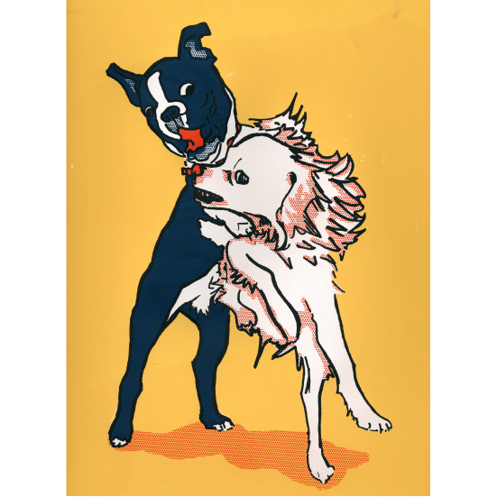

Oscar & Louie
Fall 2008
When you work in a dog friendly office, sooner or later a puppy fight is going to happen. In this instance a photo of my friend's pets, a Boston terrier named Oscar and a long-haired Chihuahua mix named Louie, turned into great subject matter for exploring printing techniques for screen-printing. I experimented with solid and halftone dot patterns, layering and registration techniques to do a 4 color run for this poster.
